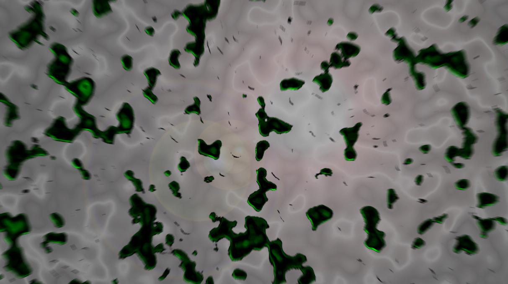

Service for Labels

Transport, loop video 0:15, 2021
Music: Roma Zuckerman
Production: Charlene Levasseur
Label: collective/коллектив
 Summer's Cell
Summer's Cell, video clip 5:59, 2020
Music: Halosaur
Production: Charlene Levasseur
Label: Rhythm Cult

 Don’t Walk Alone
Don’t Walk Alone, video clip 4:00, 2019
Music: Pablo Mateo
Production: Charlene Levasseur
Label: Figure
This music video, built in collaboration with artist Pablo Mateo. He was inspired by the film Annihilation by Alex Garland. Sojbdor integrated images that she took in Berlin's street. She comes to transform this reel images in a fantastic way, this video grouping their common ideas.
A1 Pablo Mateo Just News, loop video 0:20, 2019
Music: Pablo Mateo
Production: Charlene Levasseur
Label: Figure
A2 Pablo Mateo Blew It feat. Emika, loop video 0:19, 2019
Music: Pablo Mateo
Production: Charlene Levasseur
Label: Figure
B1 Pablo Mateo Transformation, loop video 0:12, 2019
Music: Pablo Mateo
Production: Charlene Levasseur
Label: Figure
B2 Pablo Mateo How To Crush A Super Nova, loop video 0:20, 2019
Music: Pablo Mateo
Production: Charlene Levasseur
Label: Figure
C1 Pablo Mateo Weird Reflections Beyond The Sky, loop video 0:19, 2019
Music: Pablo Mateo
Production: Charlene Levasseur
Label: Figure
C2 Pablo Mateo Don't Walk Alone, loop video 0:17, 2019
Music: Pablo Mateo
Production: Charlene Levasseur
Label: Figure
D2 Pablo Mateo Sexual For Canibals, loop video 0:20, 2019
Music: Pablo Mateo
Production: Charlene Levasseur
Label: Figure
D1 Pablo Mateo XXCheater, loop video 0:19, 2019
Music: Pablo Mateo
Production: Charlene Levasseur
Label: Figure
Video is one of the most accessible media, she said. She spends most of her time in front of her computer screen, especially watching the latest videos by Queer artists or the latest electronic music videos, such as the artist Eartheater.
Through the virtual world, she likes this possibility of being able to be another person, while having the possibility of meeting other communities with which she can exchange and share her projects.
The Internet is becoming an endless platform, like a sort of orderly chaos where information may or may not be chosen at the moment. Many artists such as : Claudia Mate, Lu yang, Martin Kohout, influence her a lot in her work by allowing her to develop a more enhanced reflection of what digital represents today
Input Mono Thin, video clip 1:26, 2019
Music: Sojbdor
Production: Charlene Levasseur
Label: Re Edit
Sojbdor x Dj Yves - Monogamy, 6:24, 2018
Music: Sojbdor
Degraded: Ilyess El Habchi
Production: Yves Bartlett
CRIM UND TRAUM, video clip, 2:10, 2019

Sound Design: Sojbdor
Photographs/Cyanotypes: Julia Castel
Production/Ecoding/3D: Charlene Levasseur
In this analogical-digital couple, cyanotypes, photographs and videos distort themselves in a digital environment and give us to see the syncopated version of a semi-scripted work all that plunged in a humorous experimental fiction, like a night vision
comp 1_2_2, video clip 0:25, 2019
Sound Design: Sojbdor feat. Nadia Mazzega_ La Maison Hantée
Album: Motherlode
Artwork: by Lucas Hadjam
Label: Acolora
ACOLORA_défi_science fiction version 2, video clip 0:36, 2019
Sound Design: Sojbdor
Production: Charlene Levasseur
Label: Acolora
Animation for a challange of Acolora, Collectif & Label of art and music called
Science_Fiction
Sound Design: Sojbdor
Production: Emmanuelle Pozzo, 2:17, 2016
There is a real parallel between her digital work and her paintings, she wants to keep this part of real especially in our time where the virtual has never been so present.
Shoshana Zuboff's research on capitalism and theses on the surveillance of Maria Alexandra Lopez such as : "The redistributed presence of the subject in digital objects and the Internet", are important references in her work.
For her to live in a 3D or VR world, it's like an antonym, it's fascinating and scary at the same time. Like the fact that you geek, while feeling guilty about geeking.
Music: Sojbdor
Production: Emmanuelle Pozzo, 2:20, 2016
ele ili, video clip 1:15, 2019
Sound Design: Eleonore Verger and Illyes El Habchi
Production: Charlene Levasseur
Ambiance Feutré, matière sonore, video clip 3:00, 2019
Music: Charlene Levasseur & Eleonore Verger
Production: Charlene Levasseur & Eleonore Verger